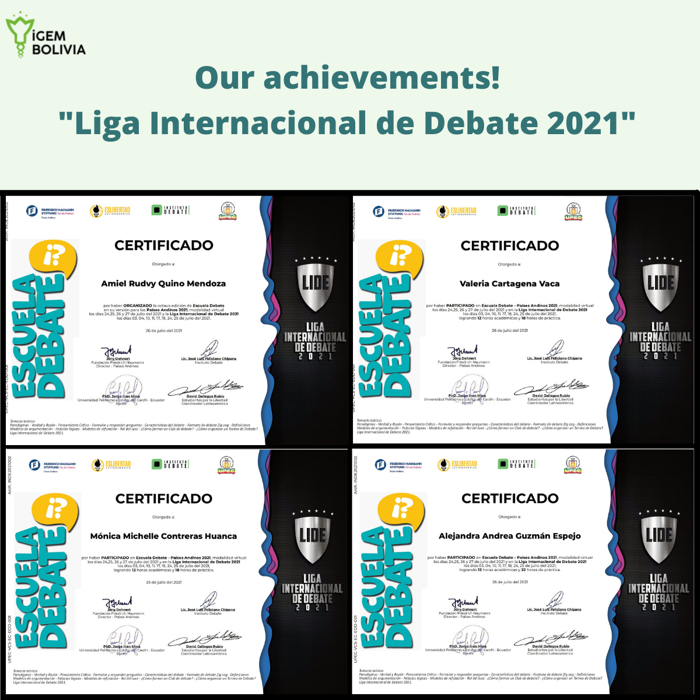

Inclusivity Award is part of iGEM Bolivia. The objective is the development of educational videos in the native languages recognized in Bolivia: Aymara, Quechua and Guarani; the purpose of this activity is to break the language barrier when communicating science. In addition, to generate a positive impact on society by disseminating basic knowledge about biology and biotechnology.
The contents of each video were previously reviewed by two of our instructors (Dr. Densy Pelaez and Cecilia Gonzalez MS.C.), so that before being translated, the content was appropriate and had a clear language.
The videos are posted on different platforms such as: Youtube, Instagram and Facebook, the latter being the main one. In this sense, the videos were disseminated in media such as television (university television of La Paz), with the aim of making the information visible and reaching more people in the country.
In the future, we would like to implement videos in sign language, as well as include other topics of social importance and educational material from different academic areas.
At the beginning of July, the "Liga Internacional de Debate 2021" was organized by "Escuela Debate" in collaboration with other organizations as iGEM Bolivia. Members of iGEM Bolivia participated as speakers (quarterfinals), panel judges (final) and main judges (semi-final) on topics of debate biotechnology the genetic design of babies, genetic modification of humans and the use of genetically modified crops.

Judge
I have participated as a judge and speaker in debates within iGEM as well as outside the organization. These roles have taught me to confront opposing ideas with arguments and evidence. This is because discussions issues surrounding biotechnology in our country can quickly become saturated by sentiments that stem from a lack of factual information or misinformation in general.
Speaker
I participated in the tournament as a speaker, although I did not participate in any biotechnology debates. I was as an audience member for some topics, such as the genetic design of babies. Despite the fact that my position was always against, the affirmative team almost managed to change my opinion because of the arguments they presented.
Judge
From an approach linked to my career, forums and debates are very didactic to understand and reflect on many of the topics that are not normally debated. My experience regarding these debates has been very interesting in the aspect of expression and dialectics. I have noticed that these aspects are very important to understand during the time of human development. Above all, to interpret and understand ideas is the basis for communication, and these forums have impressed me a great deal.
Judge
It was a unique learning experience. Not only did I hear about the research and dedication to the argumentation by the speakers from my role as a main judge and panelist, but I also better understood the purpose of the forums. The importance of biotechnology lies at the economic, political, lifestyle, psychological levels.
Organizer
It has been a pleasant experience to be part of the organization of this tournament, develop skills in argumentation and rhetoric, even more so for the context we live in.